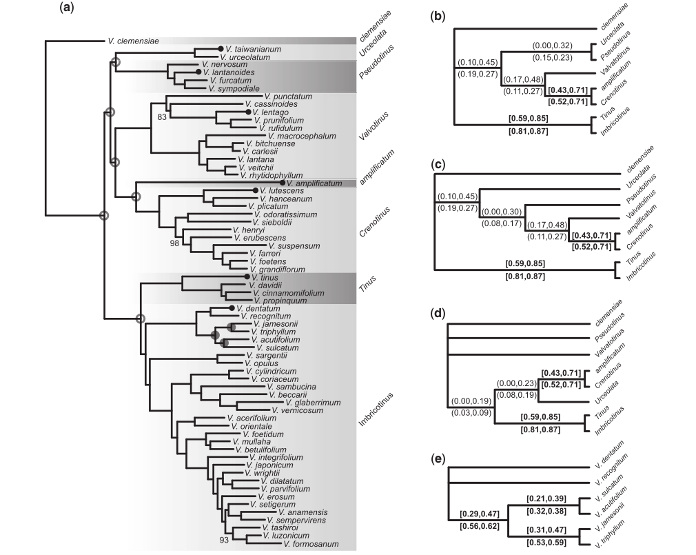

RAD-seq bioinformatics workshop
Malaga, Spain 2019
Part 1: Introduction to RAD-seq
Deren Eaton, Columbia Univesity
Isaac Overcast, City College of New York
Our schedule for today
Please follow along on https://radcamp.github.io/IBS2019/
Why are you here today?
What organism/question are you studying?
Do you have data already, if so, what kind?
What analysis tools do you hope to use on your data?
What analysis tools do you hope to use on your data?
Population genomic analyses

Reconstruct demography, calculate population divergence and introgression. With reference mapped data this can be done spatially along chromosomes.
Phylogenomic analyses
Infer gene trees and species trees, even over relatively deep evolutionary time scales (~100 Ma).
What is RAD-seq (and its variants)
The goal is to attain a
reduced representation of
the genome
Sequence to higher coverage by selecting fewer genomic regions.
Concentrate sequencing to the same regions across all samples.
Multiplex many samples onto a sequencing run.
Variant methods differ in cost and selectivity

Concerns about RAD-seq
Why not just sequence the whole genome at low-coverage?
Many genomes are very large, so it remains too expensive,
especially when studying many samples/pops/species.
Low coverage base calling can estimate population-wide
statistics well, but not individual level.
Low coverage is messy/difficult for extracting loci
for individuals (e.g., for phylogenetics) b/c so much missing data.
RAD-seq has a lot of missing data
Variation in the presence/absence of a restriction
cut site can cause loci to be present in some samples but not others.
Compared to many other methods (e.g., transcriptomes, UCEs) RAD-seq still
provides substantially more data (e.g., SNPs). The important concern is how your
analysis tools deal with missing information.
Allele dropout can affect base calls
Many genomes are very large, so it remains too expensive,
especially when studying many samples/pops/species.
Low coverage base calling can estimate population-wide
statistics well, but not individual level.
Low coverage is messy/difficult for extracting loci
for individuals (e.g., for phylogenetics) b/c so much missing data.
A quick introduction to the command line
Lines starting with hash (#) are only comments
# This is the general format of unix command line tools
$ program -option1 -option2 target
# e.g., the 'pwd' program with no option or target prints your cur dir
$ pwd
I'll use a grey background to show the returned value
/home/deren/ The ipyrad command line interface
We'll cover this soon in the RADcamp tutorial.
# The ipyrad CLI can be used in a terminal
$ ipyrad -p params-data.txt -s 123 -t 4 -c 16
Hierarchical File System
Always know where you are and where your files are.
# The root (top) of the entire filesystem (used for writing full paths).
$ /
# Here, in my current directory (used for writing relative paths).
$ ./
# Up one directory from my current directory (a relative path).
$ ../
Hierarchical File System
Always know where you are and where your files are.
# show the files and folders in a location (default target is cur dir)
$ ls
# show result as a list for cur dir.
$ ls -l ./
# show another location on the filesystem
$ ls -l /bin/
# move to a new location. This becomes your new cur dir.
$ cd folder/
Your location (current directory) starts from / (the root) and is described by a nested set of directory names leading to your location.
# use 'pwd' program with no option or target to ask where am I now?
$ pwd
/home/deren/ We can make new directories and change our location.
# make a new directory (mkdir is the program, genomics is the target)
$ mkdir genomics
# change directory (move) into the new directory and run pwd again
$ cd genomics
$ pwd
/home/deren/genomics